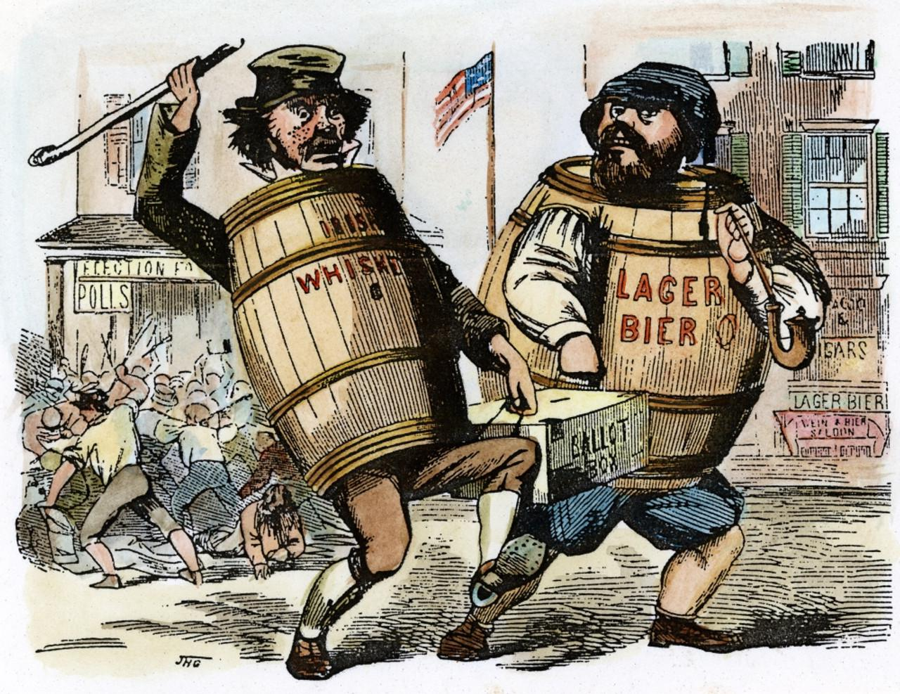
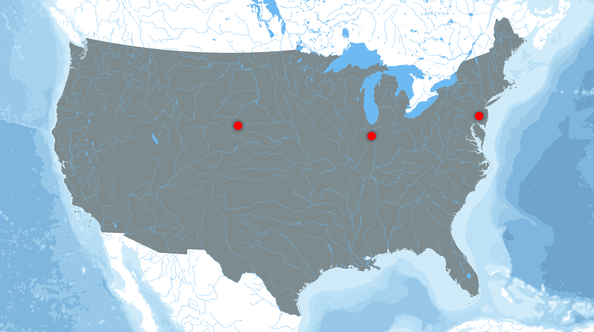

GERMAN IMMIGRATION

Push & Pull Factors
Why did Germans feel the need to leave their home country, and what made them choose America?
Learn More
Immigration Process
What was the immigration procees like? How did Germans travel here in the first place? What did German immigrants have to do once they stepped foot into America?
Learn More

Challenges Overcame
Germans, like many other immigrant groups, have faced many challenges while being in America. What were these challenges, and how did the Germans overcome them?
Learn MoreContributions Made
Germans have been in the United States for a long time. In this massive timeframe, what have Germans contributed to American society?
Learn More

Settlement Patterns
Where did Germans settle once they came to America? Did they stay in rural places or urban places? Did they migrate West? Did they mostly live in the North or the South?
Learn More